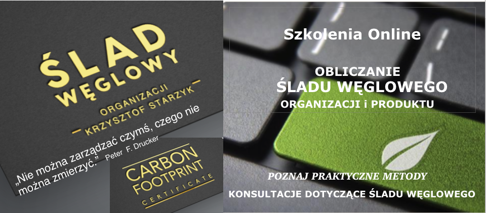
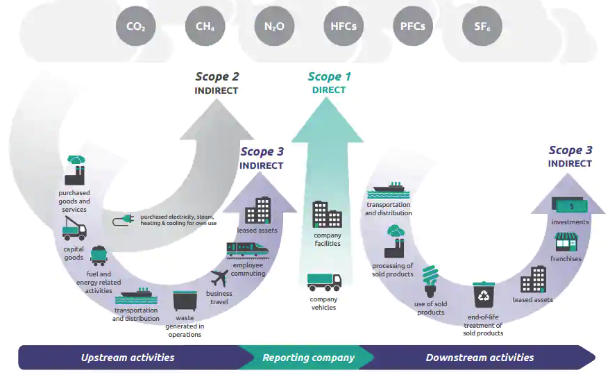

Oto jak możemy pomóc Ci obliczyć teraz Twój ślad węglowy
Skorzystaj z naszego know-how i doświadczenia w zakresie śladu węglowego. Realizujemy całe zarządzanie projektem, ale oferujemy również szeroki zakres zintegrowanych usług, które mają na celu pomóc Państwu w rozwinięciu niezbędnego know-how w zakresie określania śladu węglowego Państwa przedsiebiorstwa, produktów i usług, w tym:
- Ocena potrzeb i szkolenia, wewnętrzne lub w uzgodnionych miejscach
- Modelowanie śladów węglowych Twojego produktu, usługi lub firmy
- Gromadzenie i badanie danych
- Wsparcie online i pomoc na żądanie

Zakresy bilansowanie gazów cieplarnianych GHG zgodnie z Greenhouse Gas Protocol:
- Zakres 2 (Scope 2) definiuje się jako Pośrednie emisje GHG, które powstają w wyniku zakupu energii elektrycznej, ciepła lub pary
- Zakres 1 (Scope 1) jest zdefiniowany jako Bezpośrednie emisje GHG, które są kontrolowana przez firmę definiuje się jako Pośrednie Inne emisje GHG, na które firma może wpływać, ale nie kontroluje
- Zakres 3 (Scope 3)Wsparcie online i pomoc na żądanie

Warsztaty dotyczące śladu węglowego: zmniejszanie jego wpływu na klimat poprzez wysiłek zespołowy
Warsztaty, które odbywają się w Twojej firmie, pozwolą bliżej przyjrzeć się Twojemu obecnemu śladowi węglowemu i wspólnym opracowaniu strategii, jak najlepiej zmniejszyć ślad węglowy Twoich produktów lub firmy.